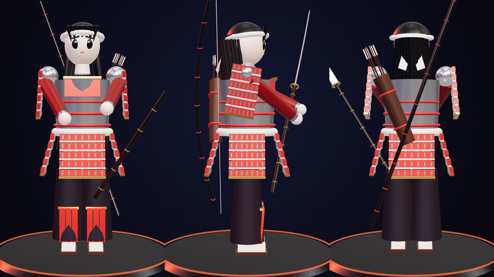
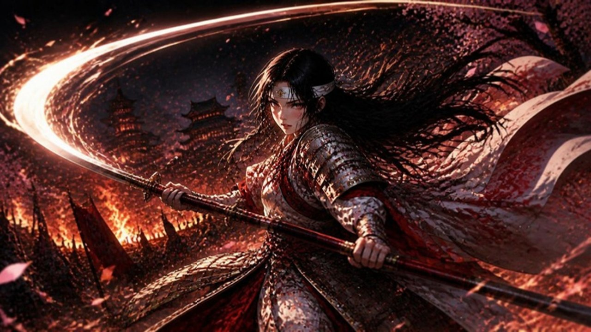
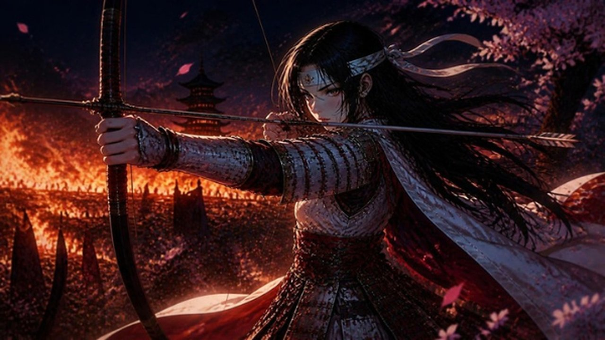

現在はプレビュー版です。実写カット（S1・S2・S3・S7）はルック画像にカメラワークを付けた仮素材で、
Higgsfield（Seedance 2.5）で生成した動画素材に差し替えて完成版にします。
構成（30秒）
| TIME | シーン | 内容・カメラワーク |
|---|---|---|
| 0:00–0:04 | S1 導入 | 燃える戦場に佇む女武者のシルエット／クレーンダウン＋プッシュイン |
| 0:04–0:08 | S2 美 | 凛とした表情のアップ／ラックフォーカス＋ドリーイン、縦組みテロップ |
| 0:08–0:12.5 | S3 武 | 長刀の斬撃（閃光・光跡）→ 剛弓を放つ（ウィップパン・ズームパンチ） |
| 0:12.5–0:15 | S4 対比 | 「美 × 剛」スプリットスクリーン |
| 0:15–0:21 | S5 企画① | 3Dアセット展示（ターンテーブル）＋装備コールアウト |
| 0:21–0:25.5 | S6 企画② | キーワード「一騎当千」「愛と宿命」「歴史バトル」＋能力レーダー |
| 0:25.5–0:27.5 | S7 結び | 刀を納める／スロープルアウト |
| 0:27.5–0:30 | S8 エンドカード | ロゴアニメーション＋「TVアニメ化企画、始動。」 |
ブランド素材


